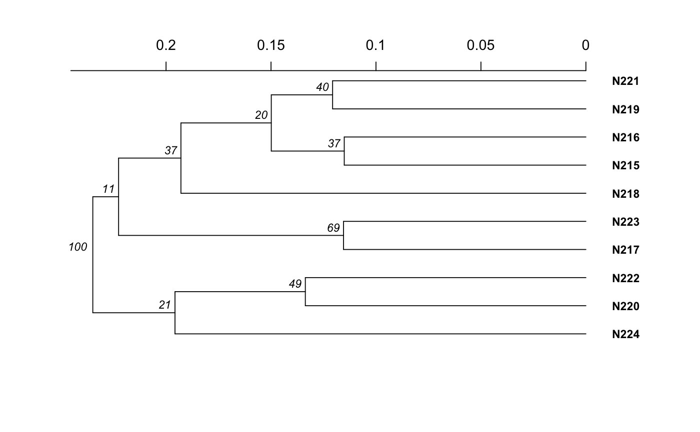

R/bruvo.r
Create a tree using Bruvo's Distance with non-parametric bootstrapping.
bruvo.boot(pop, replen = 1, add = TRUE, loss = TRUE, sample = 100, tree = "upgma", showtree = TRUE, cutoff = NULL, quiet = FALSE, root = NULL, ...)
| pop | a |
|---|---|
| replen | a |
| add | if |
| loss | if |
| sample | an |
| tree | any function that can generate a tree from a distance matrix.
Default is |
| showtree |
|
| cutoff |
|
| quiet |
|
| root |
|
| ... | any argument to be passed on to |
a tree of class phylo with nodelables
This function will calculate a tree based off of Bruvo's distance
and then utilize boot.phylo to randomly sample loci with
replacement, recalculate the tree, and tally up the bootstrap support
(measured in percent success). While this function can take any tree
function, it has native support for two algorithms: nj
and upgma. If you want to use any other functions,
you must load the package before you use them (see examples).
Please refer to the documentation for bruvo.dist for details on
the algorithm. If the user does not provide a vector of appropriate length
for replen , it will be estimated by taking the minimum difference
among represented alleles at each locus. IT IS NOT RECOMMENDED TO RELY ON
THIS ESTIMATION.
Ruzica Bruvo, Nicolaas K. Michiels, Thomas G. D'Souza, and Hinrich Schulenburg. A simple method for the calculation of microsatellite genotype distances irrespective of ploidy level. Molecular Ecology, 13(7):2101-2106, 2004.
bruvo.dist, nancycats,
upgma, nj, boot.phylo,
nodelabels, tab,
missingno.
# Please note that the data presented is assuming that the nancycat dataset # contains all dinucleotide repeats, it most likely is not an accurate # representation of the data. # Load the nancycats dataset and construct the repeat vector. data(nancycats) ssr <- rep(2, 9) # Analyze the 1st population in nancycats bruvo.boot(popsub(nancycats, 1), replen = ssr)#> #> Bootstrapping... #> (note: calculation of node labels can take a while even after the progress bar is full) #> #> Running bootstraps: 100 / 100 #> Calculating bootstrap values... done.#> #> Phylogenetic tree with 10 tips and 9 internal nodes. #> #> Tip labels: #> N215, N216, N217, N218, N219, N220, ... #> Node labels: #> 100, 21, 11, 69, 37, 49, ... #> #> Rooted; includes branch lengths.# NOT RUN { # Always load the library before you specify the function. library("ape") # Estimate the tree based off of the BIONJ algorithm. bruvo.boot(popsub(nancycats, 9), replen = ssr, tree = bionj) # Utilizing balanced FastME bruvo.boot(popsub(nancycats, 9), replen = ssr, tree = fastme.bal) # To change parameters for the tree, wrap it in a function. # For example, let's build the tree without utilizing subtree-prune-regraft myFastME <- function(x) fastme.bal(x, nni = TRUE, spr = FALSE, tbr = TRUE) bruvo.boot(popsub(nancycats, 9), replen = ssr, tree = myFastME) # }